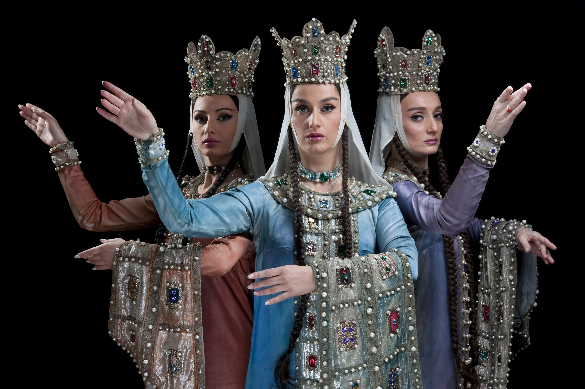

Georgian Culture
The culture of Georgia has evolved over the country's long history, providing it with a unique national identity and a strong literary tradition based on the Georgian language and alphabet. This strong sense of national identity has helped to preserve Georgian distinctiveness despite repeated periods of foreign occupation. Although Georgia is a largely traditional society, its culture continues to undergo changes in the 21st century. For example, Georgia is one of the first countries in the world to legalize cannabis for both recreational and medical use.
